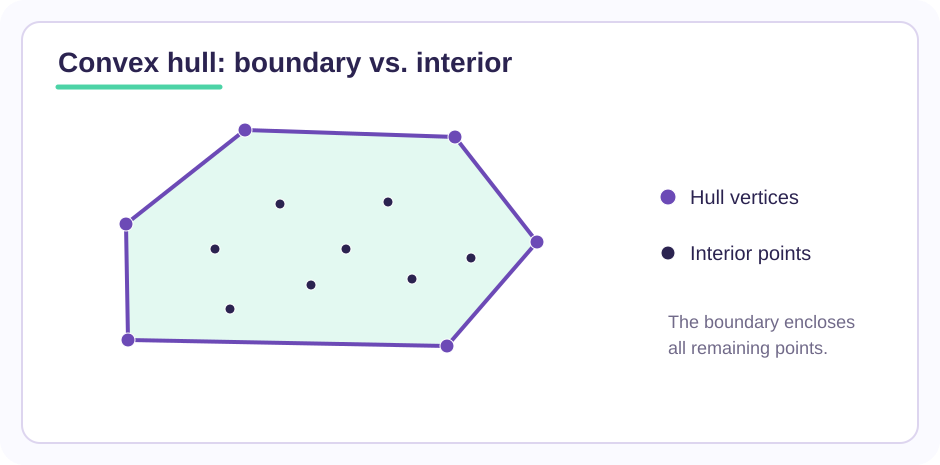
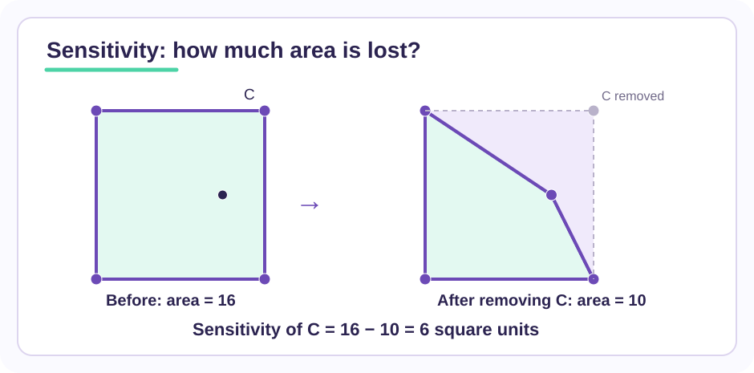
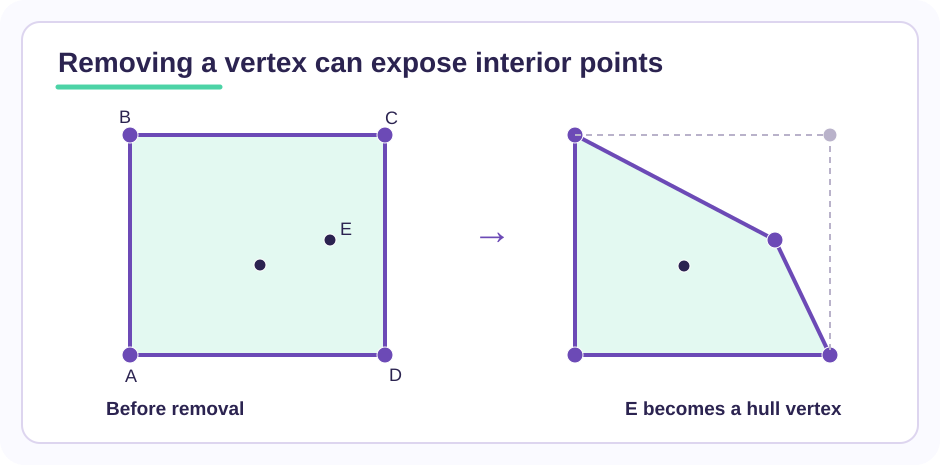
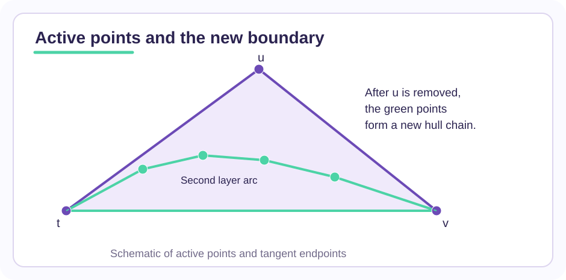
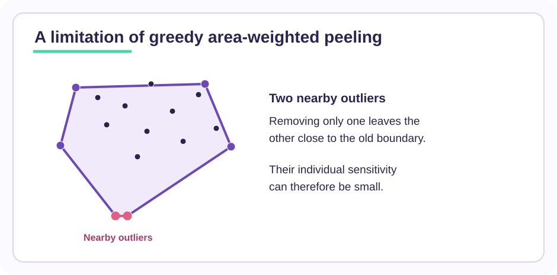

Computational geometry · Research explainer
Area-weighted
convex hull peeling.
A step-by-step explanation of how convex hull area can guide outlier detection, together with an interactive JavaScript demonstration of the greedy rule.
Experiment with geometric point sets and observe how the maximum-sensitivity choice changes after each removal.
Explore the geometry
Choose a dataset, then remove one point at a time. The highlighted point is the next greedy candidate.
Click on the plot to add points. Adding a point restarts the peeling sequence.
1. The research problem
Outlier detection aims to identify observations that differ from the main structure of a dataset. An unusual point can result from measurement errors, rare events or genuinely meaningful behavior. Identifying potential outliers matters because extreme observations can influence summaries and subsequent analysis.
This project investigates a geometric criterion for two-dimensional data: instead of measuring how far a point is from an average, we ask how much that point contributes to the area occupied by the complete set. The starting observation is that a distant point can enlarge the convex hull substantially.
Can we rank candidate outliers by repeatedly removing the point that causes the largest decrease in convex hull area—and perform this process efficiently?
In their 2024 paper, Sridhar and Svenning study this area-weighted peeling approach. Their method is a greedy heuristic for a more difficult optimization problem: find a set of k points whose joint removal minimizes the area of the remaining convex hull [1].
2. Geometric foundations
2.1 What is a convex hull?

The convex hull of a point set P is the smallest convex set containing every point in P. A set is convex if the segment joining any two of its points remains entirely inside it. For a finite planar point set, the convex hull is a convex polygon, a line segment or a single point.
A useful intuition is an elastic band stretched around the outermost points. The points inside the band do not determine its boundary. The vertices on the boundary, however, determine its shape and area.
Why do we examine hull vertices? Removing a strictly interior point leaves the convex hull unchanged, so the area decrease is zero. A positive area decrease can only come from removing a hull vertex.
2.2 Measuring polygon area
Given the polygon vertices in clockwise or counterclockwise order, its area can be calculated using the shoelace formula. This avoids dividing the polygon manually into triangles.
The last vertex is connected back to the first. The absolute value makes the result non-negative regardless of vertex orientation.
2.3 Sensitivity: the criterion for removal

For a point p, its sensitivity σ(p) is the amount by which the convex hull area decreases if that point is removed. This is the quantity optimized by each greedy step [1].
The algorithm compares the sensitivities of current hull vertices and selects a vertex with the largest value. A high sensitivity means that the point makes a large immediate contribution to the current hull area.
A numerical example with five points
Consider A = (0,0), B = (0,4), C = (4,4), D = (4,0) and E = (3,2). The initial convex hull is the square A–B–C–D with area 16. E lies inside it.
To compute the sensitivity of C, remove C temporarily and construct the new hull A–D–E–B. Its area is 10; therefore σ(C) = 16 − 10 = 6. If B is removed, the remaining hull is triangle A–D–C, of area 8, so σ(B) = 8.
| Removed point | Area afterward | Sensitivity |
|---|---|---|
| A | 8 | 8 |
| B | 8 | 8 |
| C | 10 | 6 |
| D | 10 | 6 |
| E | 16 | 0 |
Interpretation: A and B tie for the largest decrease, so either can be removed in the first greedy step. E has sensitivity zero: removing an interior point does not change the hull. These are illustrative values computed from the displayed coordinates, not experimental results reported in [1].
2.4 What changes when a vertex disappears?

After deleting a hull vertex, the new hull may contain points that were previously inside the old hull. It is generally incorrect to update the polygon by simply joining the two neighbors of the removed vertex: additional points may become exposed on the boundary.
Consequently, the sensitivity of remaining candidates must be evaluated relative to the updated hull. This motivates the more advanced geometric structures used in the research paper.
3. Greedy area-weighted peeling
The word peeling describes an iterative process that removes outer points. Area-weighted peeling chooses a single vertex at a time according to the area reduction it produces. If we want to identify k candidate outliers, the method performs k successive removals [1].
- Build the convex hull of the current point set.
- For each hull vertex, calculate the hull area after temporarily removing that vertex.
- Compute its sensitivity as the original area minus the new area.
- Remove a vertex with maximum sensitivity.
- Repeat using the remaining points, until the requested number of removals has been reached.
for step = 1 ... k:
H = convexHull(P)
for each vertex p of H:
score[p] = area(H) - area(convexHull(P without p))
choose p with the largest score[p]
P = P without pThis is a simple reference algorithm that captures the selection rule used in the paper. It is not a transcription of the authors' optimized Algorithm 1. In particular, it rebuilds hulls rather than updating geometric structures incrementally.
Why is it greedy?
Each decision maximizes the immediate area decrease. The method does not examine all possible groups of k deletions. Thus the locally best removal need not be part of the best overall set of k removed points.
Greedy vs. globally optimal: greedy peeling chooses the next vertex with the greatest sensitivity, whereas an exact k-point solution minimizes the remaining area after all k points are removed together.
5. How the research algorithm becomes fast
Recomputing every candidate hull after each removal repeats considerable work. The main technical contribution of Sridhar and Svenning [1] is to implement the same greedy deletion sequence in O(n log n) total time and O(n) space, using more sophisticated geometric data structures.
4.1 Convex layers
The first convex layer L¹ is the outer hull. After removing the vertices of that layer, the hull of the remaining points defines the second layer L². This nested structure is useful because some vertices of L² may become visible when a vertex of L¹ is deleted.
4.2 Active points

For an outer-hull vertex u, the paper calls a point active for u if it belongs to the second layer before deleting u and moves to the first layer when u is removed. These new outer vertices determine how the hull changes locally [1].
Suppose u is a tip of a convex polygon. Directly below it lie three points on the second convex layer. If deleting u causes two of them to become new outer-hull vertices while the third remains inside, only the first two are active for u.
4.3 Tangent queries
To find the relevant section of the second convex layer, the algorithm uses tangent queries from the two neighboring vertices of the removed point. Intuitively, a tangent from an exterior point touches a convex polygon at a supporting vertex without cutting through its interior.
The two tangent points identify the ends of the chain that must be considered. With a suitable representation, a tangent query takes O(log n) time; traversing all active points in the chain takes additional time proportional to their number.
4.4 Max-priority queue
A max-priority queue stores current outer-hull vertices ordered by sensitivity. Its role is different from tangent queries: it finds the next point to delete, rather than locating geometric replacement points.
For example, if A, B and C have sensitivities 4, 11 and 7 respectively, the queue returns B. Once B is removed, the priorities of affected existing vertices must be updated, and newly exposed vertices are inserted with their own sensitivities.
4.5 Dynamic convex hull and local updates
The paper also uses a dynamic convex-hull structure to help maintain points beyond the two explicit outer layers. As points move from L² to L¹, previously deeper points may need to enter L².
An important geometric result is that, among the vertices already present on the old outer hull, only the two former neighbors of the deleted vertex can need sensitivity updates. New outer vertices still require their sensitivities to be computed and inserted in the queue. The paper also bounds the total activity of exposed points over all removals, supporting its amortized complexity argument [1].
4.6 How Algorithm 1 works
The paper's Algorithm 1 combines the structures above to perform the same greedy choice without rebuilding every candidate hull. It begins by constructing the two outer layers and calculating the initial sensitivities of the outer vertices. A max-priority queue stores these values, while a dynamic convex hull structure represents the remaining, deeper points [1].
- Initialize: compute L¹ and L², evaluate the sensitivities of the outer vertices, and insert them into the queue.
- Choose a point: extract the vertex with maximum sensitivity.
- Restore the layers: find its active points through tangent queries, move them onto the outer hull, and replenish the second layer using the dynamic convex hull.
- Update priorities: calculate the sensitivities of newly exposed hull vertices and update those of the removed vertex's two former neighbours.
- Repeat: continue until the required number of points has been removed.
The key is not a different rule for deciding which point to peel: it is a more efficient way of maintaining the geometric information required by that rule.
Connection to the interactive demonstration: the page illustrates the same greedy choice, but its current implementation recalculates convex hulls to compare candidate removals. It does not implement the tangent-query, priority-queue and dynamic-hull machinery of Algorithm 1.
4.7 Why the total time is O(n log n)
At first, a deletion may seem expensive: removing one vertex can expose many points, and their contributions to neighbouring sensitivities may change. The analysis in the paper shows why these costs do not accumulate quadratically.
Local changes (Lemma 2): among vertices already on the outer hull, only the two former neighbours of a removed vertex can have their sensitivities changed. New vertices exposed by that removal must also receive sensitivity values.
Limited total activity (Theorem 5): over the entire peeling process on n points, points become active for hull vertices at most 3n times in total. This is an amortized bound across all iterations, not a claim that each step exposes at most three points.
Efficient updates (Lemma 6): if δ new points become active for a neighbouring vertex, its sensitivity can be updated in O(δ + log n) time, excluding layer restoration. Because the total number of new activations is O(n), the cumulative work for sensitivity updates stays within O(n log n). Together with logarithmic-time geometric queries and queue operations, the complete algorithm runs in O(n log n) time and O(n) space [1].
6. What can go wrong with greedy peeling?
The chosen point has the largest area contribution at that moment, but this does not guarantee that the final set of removed points is globally optimal. The paper gives a geometric counterexample (Figure 2) involving nearby outliers positioned far from a main cluster [1].
Two outliers that protect each other

Imagine two outliers close to one another and far below the rest of the dataset. Removing just one may leave the other holding the hull boundary almost as far out as before. The area decreases very little, so either outlier can have low individual sensitivity. Removing both together, however, may produce a dramatic area decrease.
A greedy algorithm may prefer other hull vertices first. This does not make the computation incorrect: it reveals the difference between a locally optimal choice and a globally optimal set of k deletions.
Interpretation and assumptions
The criterion is based solely on geometry. It does not use class labels, measurement uncertainty or the meaning of the underlying data. Different distributions can therefore lead to different removal orders, and ties in sensitivity are possible.
The theoretical paper assumes points in general position and notes that degeneracies can be addressed by perturbation. A classroom visualization may encounter collinear points and duplicate coordinates, so numerical and geometric edge cases need care when interpreting its output [1].
7. Extensions and open problems
The paper's update strategy is not limited to reducing area. The authors show that other objectives can use the same general framework when a point's score depends on its neighbouring hull vertices and active points, and when changes to that score can be maintained efficiently.
Beyond area
One example is perimeter-weighted peeling, where the chosen vertex is the one whose removal reduces the hull perimeter the most. The paper also discusses an objective based on the number of active points (Theorem 7). These are theoretical extensions of the optimized framework, not features currently implemented in this webpage [1].
Questions left open
The authors identify several directions for further work: extending the bounds to three or more dimensions, where dynamic convex hull maintenance is harder; investigating small-group removals such as two-point peels that may overcome some greedy failures; and finding efficient approximation algorithms for optimal k-peeling [1].
These questions highlight the tension between speed and quality of the selected outliers. An algorithm can be efficient while still missing a combination of points that would be better removed together.
8. Bibliography
- V. Sridhar and R. Svenning, “Fast Area-Weighted Peeling of Convex Hulls for Outlier Detection,” Proceedings of the 36th Canadian Conference on Computational Geometry (CCCG), pp. 233–240, 2024. Read the paper.
- A. M. Andrew, “Another Efficient Algorithm for Convex Hulls in Two Dimensions,” Information Processing Letters, vol. 9, no. 5, pp. 216–219, 1979.
- D. Eppstein, M. Overmars, G. Rote, and G. Woeginger, “Finding Minimum Area k-Gons,” Discrete & Computational Geometry, vol. 7, pp. 45–58, 1992.
- R. Atanassov, P. Bose, M. Couture, A. Maheshwari, P. Morin, M. Paquette, M. Smid, and S. Wuhrer, “Algorithms for Optimal Outlier Removal,” Journal of Discrete Algorithms, vol. 7, no. 2, pp. 239–248, 2009.
- B. Chazelle, “On the Convex Layers of a Planar Set,” IEEE Transactions on Information Theory, vol. 31, no. 4, pp. 509–517, 1985.
- A. Harsh, J. E., and P. Wei, “Onion-Peeling Outlier Detection in 2-D Data Sets,” International Journal of Computer Applications, vol. 139, pp. 26–31, 2016.
Sources [3–6] provide context on related work discussed in [1]. Source [2] describes the monotone-chain convex hull construction used by the interactive demonstration.